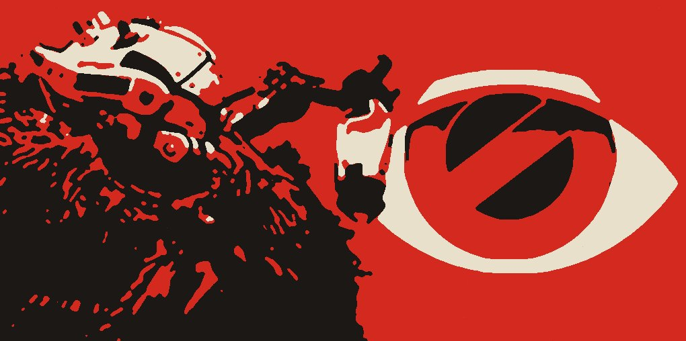
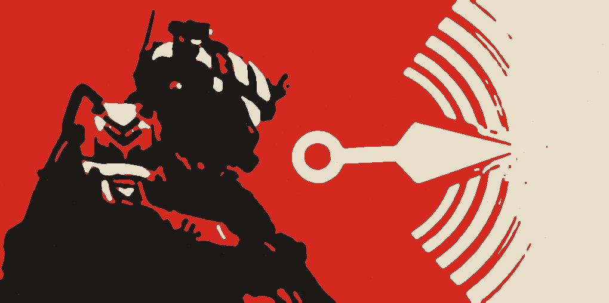
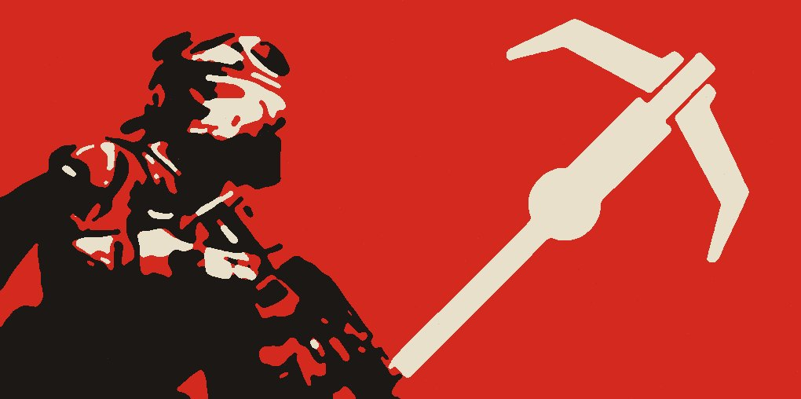
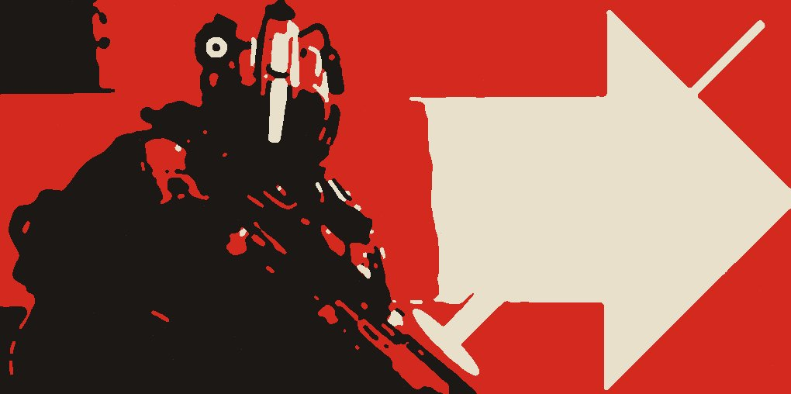
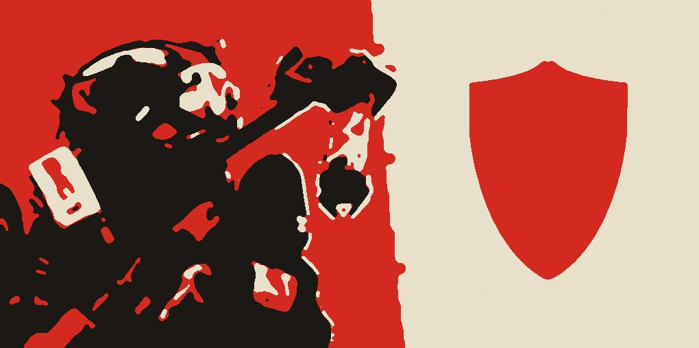
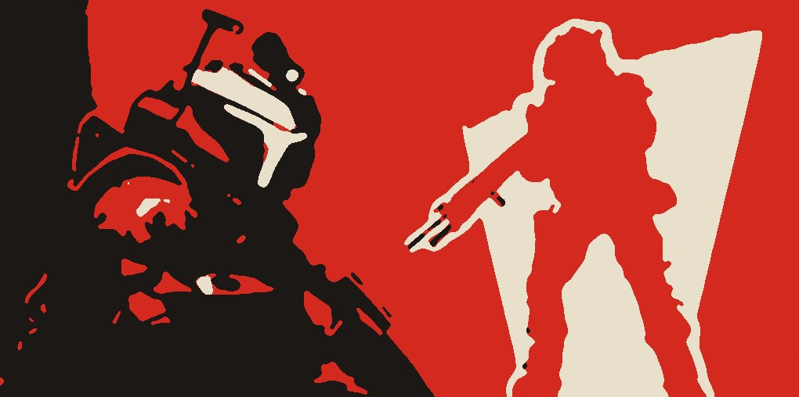
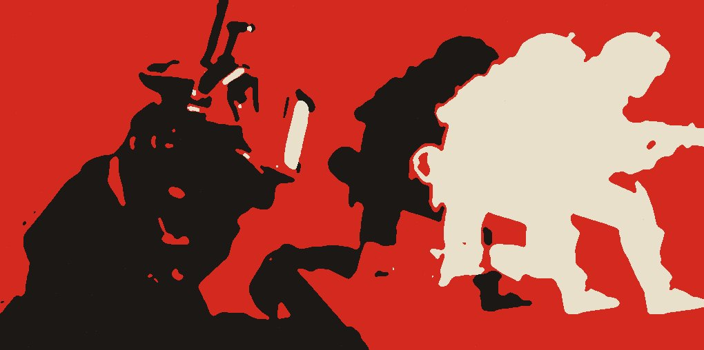

向前掷出一个铁球，在落点形成隐身立场生成器。生成器附近的友方铁驭会隐身，离开后一段时间内也会保持隐身。生成器附近的圆环代表可持续时间，生成器会被敌方攻击击毁。
03 / 铁驭技能
在 SL 中使用女性铁驭，技能会被替换为客制化版本；男性铁驭没有需要特别描述的变化。
阅读可能会破坏您的探索体验。这里一般不提数值（CD、伤害、储存上限）。可以先去简单模式自己试试，不明白再问群友。

向前掷出一个铁球，在落点形成隐身立场生成器。生成器附近的友方铁驭会隐身，离开后一段时间内也会保持隐身。生成器附近的圆环代表可持续时间，生成器会被敌方攻击击毁。

使用后向上腾空飞起，并在空中悬浮。

站在地面上时，向准心所指处释放滑索，连接当前位置和指定位置。有存在时间限制，不会被攻击。充能指示条可能不准确。

丢出一个破坏球，经过的地方留下加速点，铁驭经过时获得短暂加速。碰到敌人或存在时间达到上限时爆炸，效果与电弧手雷相似。

丢出圆盘状烟雾陷阱，落地释放烟雾。敌方进入烟雾范围会被声呐标记。

在原地创建蓝色球形传送标记，此后移动消耗传送能量。能量耗尽前再次使用技能，在当前位置和标记位置之间创建传送门。靠近传送门会被传送，路径与创建时的行动路径相同。充能指示条可能不准确。

创建一个幻影，再次使用技能传送回幻影处，水平朝向与幻影相同。幻影会被敌方击破。充能指示条可能不准确。
过时了？告诉 @0youer 哪里需要改，主动更新频率可能很低。